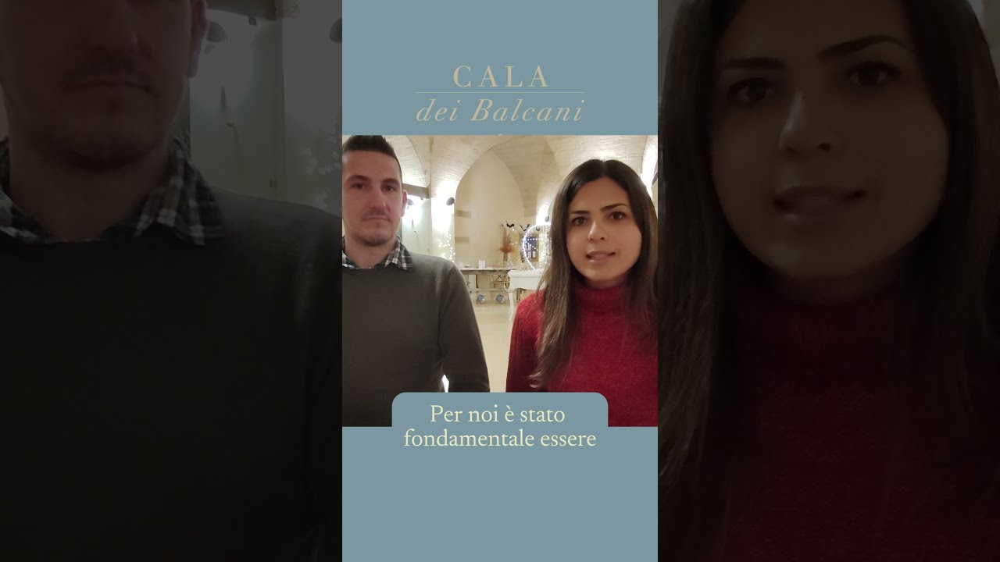

Organizar una boda ya es exigente. Hacerlo desde lejos, sin poder estar presente en cada visita, cada cata, cada detalle, puede parecer imposible. Cristina y Matteo demuestran lo contrario: con el equipo adecuado al lado, una boda en el Salento funciona incluso a miles de kilómetros.
Antes de la boda: un camino agradable
La planificación a distancia se volvió manejable porque Cala dei Balcani estuvo siempre presente. Cristina y Matteo se sintieron comprendidos desde el primer mensaje — videollamadas, asesoramiento detallado y un equipo que se adelantaba a sus preocupaciones crearon confianza real. Nunca se sintieron solos.
El día de la boda: como en casa
Cuando por fin llegaron a Santa Cesarea Terme, Cristina y Matteo encontraron exactamente lo que habían imaginado — y más. La calidez del personal, la intimidad de los espacios y el cuidado del detalle les hicieron sentirse invitados de una familia, no clientes de una finca.
Los invitados se entregaron por completo y, meses después, seguían hablando de ella como una de las mejores bodas a las que habían asistido.
Vuestra boda también puede empezar desde lejos
Si vivís en el extranjero o en otra región de Italia y soñáis con una boda en el Salento, Cristina y Matteo demuestran que la distancia no es el obstáculo — si el equipo es el adecuado. Cala dei Balcani está preparado para acompañar a parejas de cualquier lugar, con un proceso rodado, transparente y pensado para reducir las preocupaciones.
¿Lejos, pero decididos a casaros en el Salento?
Escribidnos: os mostraremos cómo os acompañamos paso a paso, incluso a miles de kilómetros.
